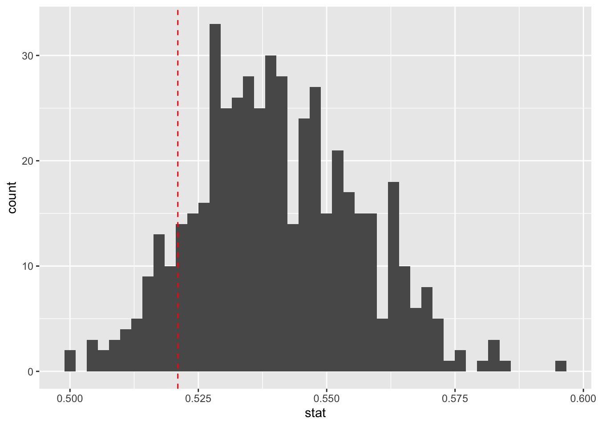
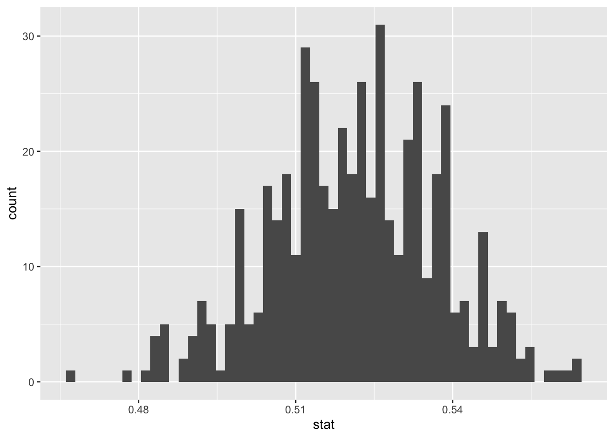

Code
head(dream)# A tibble: 6 × 2
ideology stance
<fct> <fct>
1 Conservative Yes
2 Conservative Yes
3 Conservative Yes
4 Conservative Yes
5 Conservative Yes
6 Conservative Yes In the previous lab (lab 7), we created a confidence interval for a single proportion using the infer package. In this lab, we will perform a hypothesis test for a single proportion and also create a confidence interval and compare the results.
The Development, Relief, and Education for Alien Minors Act (DREAM Act) is a legislative proposal in the United States that aims to provide a pathway to legal status for undocumented people who were brought to the U.S. as children. These people are often referred to as DREAMERS. The DREAM Act passed the House of Representatives in 2010 but failed to reach the 60-vote requirement in the Senate. The Act has been a topic of heated debate in U.S. politics for many years.
A Gallup Poll conducted in 2010, reported that about 54% of Americans supported the DREAM act (Migration Policy Institute, 2010). The poll also found that the opinions on the DREAM Act vary by political leaning.
We want to use statistical inference (hypothesis test and a confidence interval) to answer the research question:
Research Question: Is the proportion of Americans who supported the DREAM Act in 2012 different from 0.54 (or 54%).
Null Hypothesis: The proportion of Americans who supported the DREAM Act in 2012 is equal to 0.54.
\[H_0: p = 0.54.\]
Alternative Hypothesis: The proportion of Americans who supported the DREAM Act in 2012 is different from 0.54.
\[H_0: p \neq 0.54.\]
Create a new quarto document with the title Inference for a Single Proportion and save the file as lab_8_Explo. Please check previous labs (e.g., lab 4) if you are unsure how to do this. Be sure to delete all the default text in the new file before you start the lab exploration.
The dataset we will use is called dream and is available in the openintro package. We will also use the infer and tidyverse packages. Use the following code to load the packages and the data:
library(openintro)
library(tidyverse)
library(infer)
data(dream)After running the code chunk, the dream dataset should appear in the environment area. Open it and examine the cases and variables. be available for use in your analysis. You can run the code chunk below to view the first few rows of the dataset:
head(dream)# A tibble: 6 × 2
ideology stance
<fct> <fct>
1 Conservative Yes
2 Conservative Yes
3 Conservative Yes
4 Conservative Yes
5 Conservative Yes
6 Conservative Yes There are two variables in this dataset - ideology (conservative, liberal, moderate) and stance (Yes, No, Note sure). Since we are interested in a single proportion (proportion of Americans who supported the DREAM Act), we will focus on the stance variable only.
Notice that the stance variable has 3 levels - Yes, No, Not sure. In order to run inference for a single proportion, we need the stance variable to have only two levels. To do this, we can group No and Not sure together and call them Not Yes. See the code below:
dream_filtered <- dream |>
mutate(stance = if_else(stance == "Yes", "Yes", "Not Yes"))Then, we create the summary table again using the filtered dataset:
dream_filtered |>
group_by(stance) |>
summarize(count = n()) |>
mutate(proportion = count / sum(count))# A tibble: 2 × 3
stance count proportion
<chr> <int> <dbl>
1 Not Yes 436 0.479
2 Yes 474 0.521Thus, the observed statistic is 0.521 (or 52.1%). This is the proportion of Americans in the sample that supported the DREAM Act in 2012.
Next, we want to run simulations to see the distribution of the observed statistic under the null hypothesis. We will use the infer package to do this. Run the code below:
set.seed(1234) # Prevents simulated data from changing.
dream_sim <- dream_filtered |>
specify(response = stance, success = "Yes") |>
hypothesize(null = "point", p = 0.54) |>
generate(reps = 500, type = "draw") |>
calculate(stat = "prop")The code should run without errors. The dream_sim object (see environment) contains 500 simulated proportions under the null hypothesis.
We can visualize the null distribution of the proportions using a histogram. We also indicate the location of observed statistic. See code below:
dream_sim |>
ggplot(aes(x = stat)) +
geom_histogram(bins=45)+
geom_vline(xintercept = 0.521, color = "red", linetype = "dashed") 
Note that the center of the null distribution is around 0.54, which is expected since that is the value we specified in the null hypothesis. The observed statistic appears to be close to the null value (0.54).
The P-value is the fraction of values at or more extreme than the observed statistic in the null distribution. Since we are doing a two-tailed test, we need to consider both tails of the distribution. We can use the get_p_value() function from the infer package to calculate the P-value as shown below:
p_value <- dream_sim |>
get_p_value(obs_stat = 0.521, direction = "two-sided")
p_value# A tibble: 1 × 1
p_value
<dbl>
1 0.22The P-value we obtained is approximately 0.22 (or 22%). Based on the 5% discenibility level, we do not have enough evidence to reject the null hypothesis. Therefore, we conclude that there is not enough evidence to suggest that the proportion of Americans that supported the DREAM Act in 2012 is different from 54%.
To create a 95% confidence interval, we use our filtered data to run bootstrap simulations to create several bootstrap samples:
set.seed(12) # Prevents simulated data from changing.
dream_boot <- dream_filtered |>
specify(response = stance, success = "Yes") |>
generate(reps = 500, type = "bootstrap") |>
calculate(stat = "prop")We can visualize the bootstrap distribution using a histogram:
dream_boot |>
ggplot(aes(x = stat)) +
geom_histogram(bins=55)
Notice that the bootstrap distribution is centered around the observed statistic (approx. 0.52). Next, we can use the get_ci() function to create a 95% confidence interval as shown below:
dream_boot |>
get_ci(level = 0.95, type = "percentile")# A tibble: 1 × 2
lower_ci upper_ci
<dbl> <dbl>
1 0.488 0.552The 95% confidence interval is approximately (0.488 to 0.552) or 48.8% to 55.2%. This means that we are 95% confident that the true proportion of Americans who supported the DREAM Act in 2012 is between 48.8% and 55.2%. This interval further supports the conclusion reached for the hypothesis test since the value of 54% falls inside this confidence interval.
In this lab exercises, you will use the same dataset (dream) used in the exploration above.
Create a new quarto file and title it Inference for a Single proportion. Save the document as Lab_8_Exe. Load the following packages:
#| include: false
library(openintro)
library(tidyverse)
library(infer)
data(dream)Scenario: A Gallup poll conducted in 2010 indicated that 35% of Americans identified as Moderate when it comes to political ideology. The goal is for you to use the dream dataset (collected in 2012) and statistical inference ideas to examine whether the proportion of Americans who identified as Moderate in 2012 was different from 0.35 (35%).
(2 pts) What does the variable ideology in the dream dataset represent? What are the levels of this variable?
(2 pts) State the null and alternative hypotheses to test whether the proportion of Americans who identified as Moderate in 2012 is different from 0.35 (or 35%).
(4 pts) What would be the observed statistic in this scenario? Compute it.
(Hint: You may want to modify the variable ideology so that it has two levels only)).
(4 pts) Run 1000 simulations to create the null distribution. Visualize this distribution using a histogram and indicate the location of the observed statistic. Why is this distribution centered around 0.35?
(4 pts) Use the get_p_value() function to find the P-value, then write the conclusion of your hypothesis test in context of the data.
(4 pts) Create a 95% confidence interval for the proportion of Americans who identified as moderate in 2012. Write the interpretation of this interval in context of the data and indicate whether your conclusion from the hypothesis test is supported by this interval.